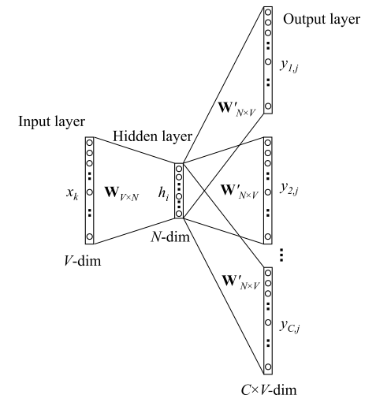

NLP
Contents
NLP¶
Benchmark¶
GLUE：General Language Understanding Evaluation¶
Corpus of Linguistic Acceptability (CoLA)
Stanford Sentiment Treebank (SST-2)
Microsoft Research Paraphrase Corpus (MRPC)
Quora Question Pairs (QQP)
Semantic Textual Similarity Benchmark (STS-B)
Multi-Genre Natural Language Inference (MNLI)
Question-answering NLI (QNLI)
Recognizing Textual Entailment (RTE)
Winograd NLI (WNLI)
文本表征¶
Word2Vector¶
词嵌入模型：把词映射为实数域向量的技术也叫词嵌⼊
谷歌2013年提出的Word2Vec是目前最常用的词嵌入模型之一。Word2Vec实际是一种浅层的神经网络模型，它有两种网络结构，分别是连续词袋（CBOW）和跳字(Skip-Gram)模型。
CBOW¶
全称Continuous Bag-of-Word，中文叫做连续词袋模型：以上下文来预测当前词 \(w_t\) 。CBOW模型的目的是预测 \(P(w_t| w_{t-k}, \cdots, w_{t-1}, w_{t+1}, \cdots, w_{t+k}) \)

前向传播过程
输入层: 输入C个单词\(x\)： \(x_{1k}, \cdots, x_{Ck} \)，并且每个 \(x\) 都是用 One-hot 编码表示，每一个 \(x\) 的维度为 V（词表长度）。
输入层到隐层
首先，共享矩阵为 \(W_{V \times N}\) ，V表示词表长度，W的每一行表示的就是一个N维的向量（训练结束后，W的每一行就表示一个词的词向量）。
然后，我们把所有输入的词转\(x\)化为对应词向量，然后取平均值，这样我们就得到了隐层输出值 ( 注意，隐层中无激活函数，也就是说这里是线性组合)。 其中，隐层输出 \(h\) 是一个N维的向量 。 $\( h = \frac{1}{C} W^T(x_1 + x_2 + \cdots + x_c) \)$
隐层到输出层：隐层的输出为N维向量 \(h\) ， 隐层到输出层的权重矩阵为 \(W'_{N \times V}\) 。然后，通过矩阵运算我们得到一个 \(V \times 1 \) 维向量 $\( u = W'^{T} * h \)$
其中，向量 \(u\) 的第 \(i\) 行表示词汇表中第 \(i\) 个词的可能性，然后我们的目的就是取可能性最高的那个词。因此，在最后的输出层是一个softmax 层获取分数最高的词，那么就有我们的最终输出：
损失函数：我们假定 \(j^*\) 是真实单词在词汇表中的下标，那么根据极大似然法，则目标函数定义如下：
Skip-gram¶
Skip-Gram的基本思想是：通过当前词 \(w_t\) 预测其上下文 \(w_{t-i}, \cdots , w_{t+i}\) ，模型如下图所示：

前向传播过程
输入层： 输入的是一个单词，其表示形式为 One-hot ，我们将其表示为V维向量 \(x_k\) ，其中 \(V\) 为词表大小。然后，通过词向量矩阵 \(W_{V \times N}\) 我们得到一个N维向量
$\( h = W^T * x_k = v^{T}_{w_I} \)$隐层： 而隐层中没有激活函数，也就是说输入=输出，因此隐藏的输出也是 \(h\) 。
隐层到输出层：
首先，因为要输出C个单词，因此我们此时的输出有C个分布： \(y_1, \cdots y_C \)，且每个分布都是独立的，我们需要单独计算， 其中 \(y_i\) 表示窗口的第 \(i\) 个单词的分布。
其次， 因为矩阵 \(W'_{N \times V}\) 是共享的，因此我们得到的 \(V \times 1\) 维向量 \(u\) 其实是相同的，也就是有 \(u_{c,j} = u_j\) ，这里 \(u\) 的每一行同 CBOW 中一样，表示的也是评分。
最后，每个分布都经过一个 softmax 层，不同于 CBOW，我们此处产生的是第 \(i\) 个单词的分布（共有C个单词），如下： $\( P(w_{i,j}| context) =y_i = \frac{exp({u_j})}{\sum_{k \in V} exp({u_k})} \)$
损失函数：假设 \(j^*\) 是真实单词在词汇表中的下标，那么根据极大似然法，则目标函数定义如下：
Word2Vec与LDA的区别¶
LDA：LDA是利用文档中单词的共现关系来对单词按主题聚类，也可以理解为对“文档-单词”矩阵进行分解，得到“文档-主题”和“主题-单词”两个概率分布。
Word2Vec：Word2Vec是利用上下文-单词“矩阵进行学习，其中上下文由周围的几个单词组成，由此得到的词向量表示更多地融入了上下文共现的特征。也就是说，如果两个单词所对应的word2vec向量相似度较高，那么它们很可能经常在同样的上下文中出现。
LDA模型是一种基于概率图模型的生成式模型，其似然函数可以写成若干条件概率连乘的形式，其中包括需要推测的隐含变量（即主题）；
而Word2Vec模型一般表达为神经网络的形式，似然函数定义在网络的输出之上，需要通过学习网络的权重以得到单词的稠密向量表示。
问题¶
对每个local context window单独训练，没有利用包 含在global co-currence矩阵中的统计信息。
对多义词无法很好的表示和处理，因为使用了唯一的词向量
Tf-idf¶
一个词语在一篇文章中出现次数越多, 同时在所有文档中出现次数越少, 越能够代表该文章.
TF: Term Frequency, 表示词频。 一个给定的词在该文章中出现的次数。 $\( TF = \frac{\text{某个词在文章中的出现次数}}{\text{文章的总词数}} \\ \)$
IDF: Inverse Document Frequency, 表示逆文档频率。如果包含词条 t 的文档越少, IDF越大，则说明词条具有很好的类别区分能力。
**TF-IDF：**某一特定文件内的高词语频率，以及该词语在整个文件集合中的低文件频率，可以产生出高权重的TF-IDF。因此，TF-IDF倾向于过滤掉常见的词语，保留重要的词语 $\( \text{TF-IDF} = TF \times IDF \)$
举例说明
假设现在有一篇文章， 文章中包含 10000 个词组， 其中，”贵州” 出现100次，”的” 出现500次，那么我们可以计算得到这几个词的 TF(词频) 值： $\( TF(贵州) = 100 / 10000 = 0.01 \\ TF(的) = 500 / 10000 = 0.05 \)\( 现在语料库中有 1000 篇文章， 其中，包含 "贵州" 的有 99 篇， 包含 "的" 的有 899 篇， 则它们的 IDF 值计算为： \)\( IDF(贵州) = log(1000 / (99+1)) = 1.000 \\ IDF(的) = log(1000 / (899+1)) = 0.046 \)$
优缺点
优点：简单快速，而且容易理解。
缺点：有时候用词频来衡量文章中的一个词的重要性不够全面，有时候重要的词出现的可能不够多，而且这种计算无法体现位置信息，无法体现词在上下文的重要性。
主题模型¶
LDA¶
LDA(Latent Dirichlet Allocation)：潜在狄利克雷分布，是一种非监督机器学习技术。它认为一篇文档是有多个主题的，而每个主题又对应着不同的词。
核心思想是认为一篇文档的生成流程是：
以一定概率选出一个主题
以一定概率选出一个词
重复上述流程直至选出所有词
\(L D A\) 的学习过程可以看作以形成的主题作为桥梁，通过两个向量 \(\left(\theta_{d}, \Phi_{t}\right)\), 分別给定 \(P\) (词|主题) 和 \(P\) (主题|文档) 从而计算P(词|文档) 的过 程：\(p(\) 词语 \(\mid\) 文档 \()=\sum_{\text {主题 }} p(\) 词语 \(\mid\) 主题 \() \times p(\) 主题 \(\mid\) 文档 \()\)
用来推测文档的主题分布。它可以将文档集中每篇文档的主题以概率分布的形式给出，从而通过分析一些文档抽取出它们的主题分布后，便可以根据主题分布进行主题聚类或文本分类。
LDA预测出的结果是文档在N个topic上的权重分布
训练过程
Gibbs采样｜对应贝叶斯参数估计的过程：先验分布+数据的知识= 后验分布 这个求参数的方法推导比较复杂，不是简单的极大似然估计可以搞定的。需要用到使用变分EM以及吉布斯(Gibbs Sampling)的方式
LDA 中主题数目如何确定？
在 LDA 中，主题的数目没有一个固定的最优解。模型训练时，需要事先设置主题数，训练人员需要根据训练出来的结果，手动调参，有优化主题数目，进而优化文本分类结果。
from sklearn.decomposition import LatentDirichletAllocation
n_topics = 10 # 主题数
lda = LatentDirichletAllocation(n_components=n_topics,
max_iter=500,
learning_method='online',
learning_offset=50,
random_state=0)
lda.fit(tf)
print(lda.components_) # 显示主题数 model.topic_word_
print(lda.components_.shape) 几个主题就是几行 多少个关键词就是几列
# 困惑度
print(lda.perplexity(tf,sub_sampling = False))
# 主题-关键词分布
def print_top_words(model, tf_feature_names, n_top_words):
for topic_idx,topic in enumerate(model.components_): # lda.component相当于model.topic_word_
print('Topic #%d:' % topic_idx)
print(' '.join([tf_feature_names[i] for i in topic.argsort()[:-n_top_words-1:-1]]))
print("")
# 定义好函数之后 暂定每个主题输出前20个关键词
n_top_words = 50
tf_feature_names = tf_vectorizer.get_feature_names()
print_top_words(lda, tf_feature_names, n_top_words)
# 可视化
import pyLDAvis
import pyLDAvis.sklearn
data = pyLDAvis.sklearn.prepare(lda,tf,tf_vectorizer)
pyLDAvis.display(data)